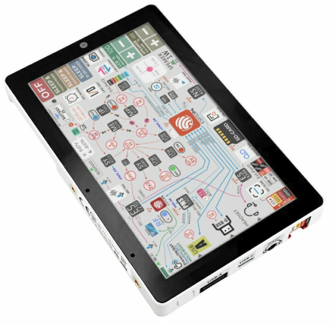
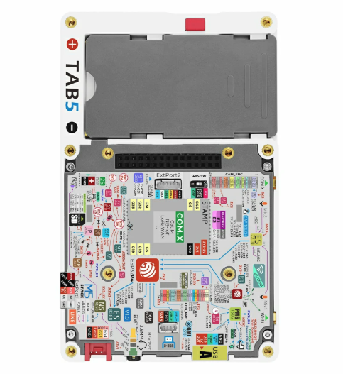

M5Stack Tab5

M5Stack Tab5 (front)
The M5Stack Tab5 is a portable HMI tablet built around the ESP32-P4 (dual RISC-V) application processor, paired with an ESP32-C6 companion module for Wi-Fi 6 / BLE / Thread connectivity over SDIO.
This NuttX port brings up the parts of the board that work with the upstream ESP32-P4 drivers only — no out-of-tree driver patches are required. The display and the other peripherals are not implemented yet; their pin assignments are documented below so they can be added later.

M5Stack Tab5 (rear): PCB, NP-F550 battery bay and M5-Bus connector
Features
ESP32-P4 (dual RISC-V @ 360 MHz), 16 MB flash, 32 MB Octal PSRAM
ESP32-C6-MINI-1U companion (Wi-Fi 6 / BLE / Thread) over SDIO2
5” MIPI-DSI IPS display, 1280x720 (ILI9881C), GT911 capacitive touch
ES8388 audio codec + NS4150B speaker amp, ES7210 microphone array
SC2356 2 MP MIPI-CSI camera
BMI270 6-axis IMU, RX8130CE RTC, INA226 power monitor
Two PI4IOE5V6408 I2C IO expanders
NP-F550 battery via IP2326 charger, USB Type-C (OTG) + Type-A host
RS485 (SIT3088), microSD, M5-Bus 30-pin + Grove HY2.0-4P
Supported features
Peripheral |
Status |
|---|---|
UART / USB-Serial-JTAG |
Yes (NSH console on the USB-C port, |
I2C0 |
Yes ( |
PSRAM |
Yes (32 MB Octal) |
GPIO / BOOT button |
Yes |
Not yet implemented (pins and I2C addresses documented below):
MIPI-DSI display (ILI9881C) and GT911 touch
Audio (ES8388 / ES7210), camera (SC2356)
INA226 power monitor — battery rail, 5 mOhm shunt (bus voltage = battery voltage; positive current = discharging, negative = charging)
RX8130CE RTC, microSD, ESP32-C6 Wi-Fi
Pin mapping
GPIO |
Function |
|---|---|
5 |
M5-Bus SCK |
6 |
PC_TX (debug UART) |
7 |
PC_RX (debug UART) |
8-15 |
ESP32-C6 SDIO2 bus (D3-D0, IO2, RST, CK, CMD) |
16, 17 |
M5-Bus general / PB_IN |
18 |
M5-Bus MOSI |
19 |
M5-Bus MISO |
20 |
RS485 TX |
21 |
RS485 RX |
22 |
LCD backlight enable (LEDA, via ME2212 boost) |
23 |
Touch interrupt (TP_INT, GT911) |
26 |
I2S DSDIN (audio data to ES8388) |
27 |
I2S SCLK (audio bit clock) |
29 |
I2S LRCK (audio word clock) |
30 |
I2S / camera MCLK |
31 |
I2C0 SDA (touch, audio, IMU, RTC, power-mon, IO exp) |
32 |
I2C0 SCL |
34 |
RS485 direction (DE/RE) |
35 |
BOOT button |
36 |
Camera MCLK |
37 |
M5-Bus TXD0 |
38 |
M5-Bus RXD0 |
39 |
SD DAT0 (SPI MISO) |
40 |
SD DAT1 (SPI CS in microSD NAND mode) |
41 |
SD DAT2 (SPI SCK) |
42 |
SD DAT3 (SPI MOSI) |
43 |
SD CLK |
44 |
SD CMD |
52 |
M5-Bus PB_OUT |
53 |
Grove SDA |
54 |
Grove SCL |
Note
The MIPI-DSI data/clock lanes are dedicated MIPI pins (powered by
VDD_MIPI_DPHY) and are not part of the GPIO matrix. The panel has no
GPIO reset line (BSP_LCD_RST = NC); it is reset by the board power-on
reset. LCD_EN and TOUCH_EN are driven by IO expander 0x43
(P4 = LCD_EN, P5 = TOUCH_EN).
I2C device address map
Address |
Device |
|---|---|
0x10 |
ES8388 audio codec |
0x14 |
GT911 touch controller |
0x32 |
RX8130CE RTC |
0x40 |
ES7210 microphone array |
0x41 |
INA226 power monitor |
0x43 |
PI4IOE5V6408-1 IO expander (LCD_EN / TOUCH_EN) |
0x44 |
PI4IOE5V6408-2 IO expander (USB / Wi-Fi enables) |
0x68 |
BMI270 IMU |
Chip revision
The Tab5 ships with ESP32-P4 revision v1.0. The nsh defconfig sets
CONFIG_ESP32P4_SELECTS_REV_LESS_V3=y accordingly. A harmless boot warning
is printed because the upstream default targets rev >= 3.0.
Configurations
nsh
Basic NuttShell configuration (console enabled over the USB Serial/JTAG port,
exposed as /dev/ttyACM0 on the host). Brings up the I2C0 bus.
Building and flashing
$ ./tools/configure.sh esp32p4-tab5:nsh
$ make -j
The NuttX image must be flashed at offset 0x2000 (the SIMPLE_BOOT
application offset for the ESP32-P4):
$ esptool.py -c esp32p4 -p /dev/ttyACM0 -b 921600 write_flash 0x2000 nuttx.bin
Then open the console:
$ picocom -b 115200 /dev/ttyACM0
nsh>